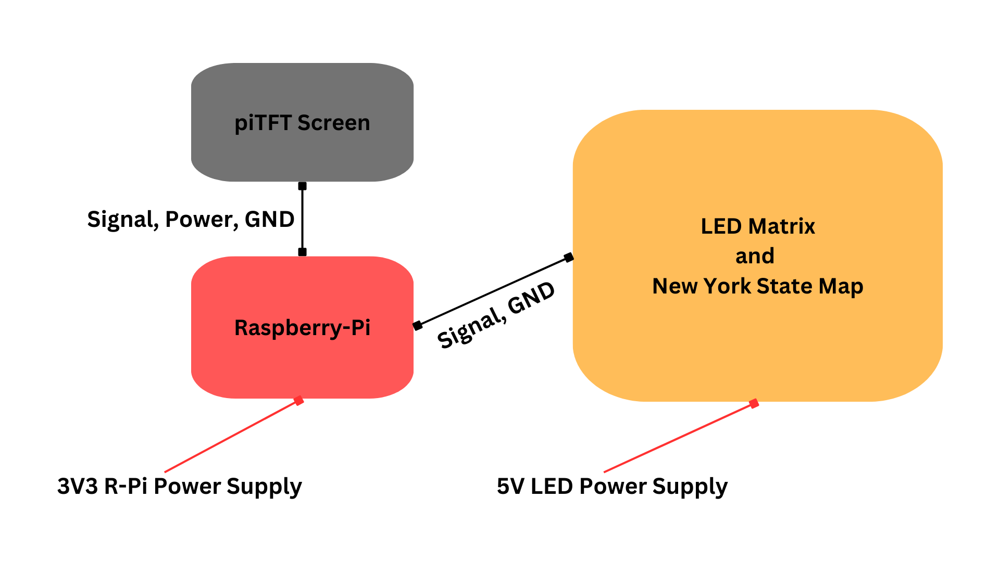
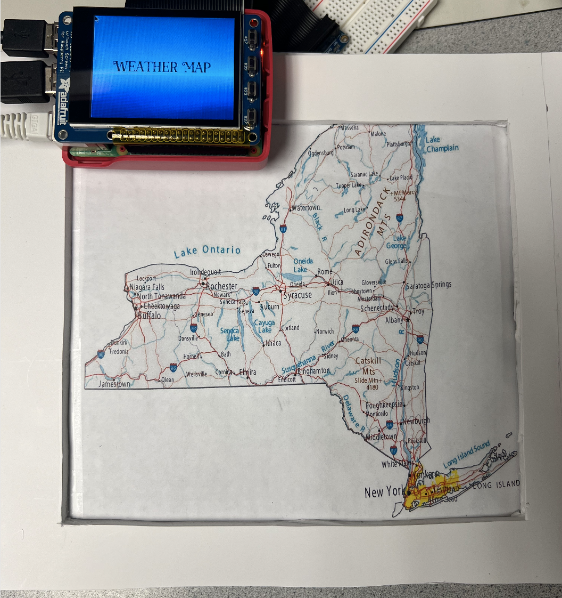
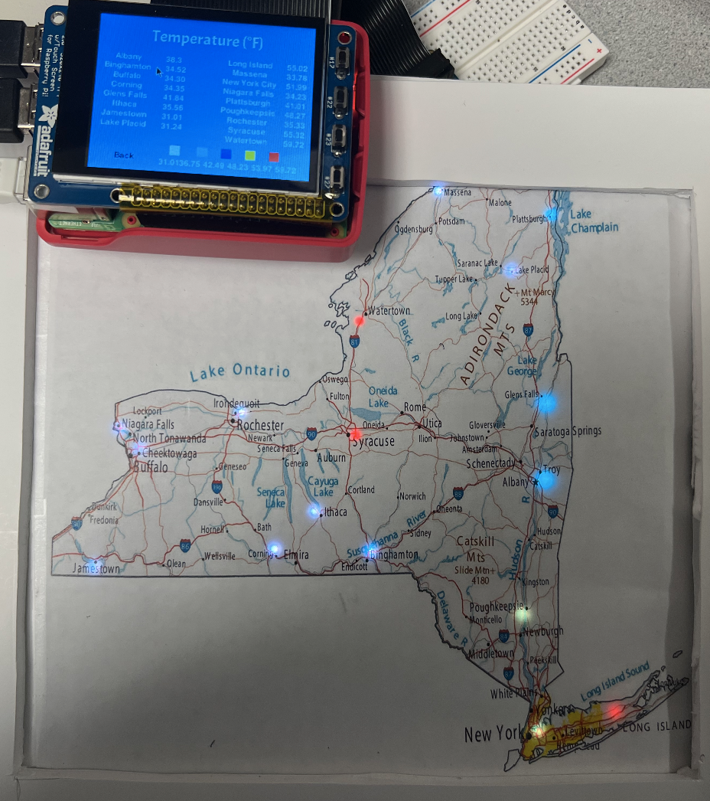
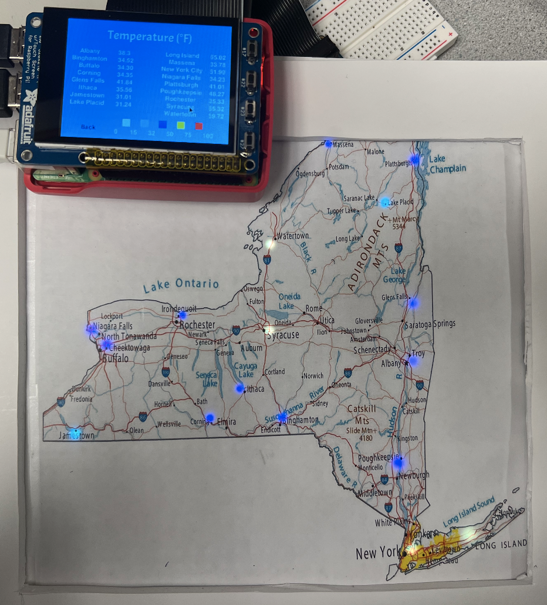

Grade: A
Final Project was completed with Master's student Mahathi Andavolu.
Final Project: Weather Map
Final Project
- Design and Build a Weather Map using a Raspberry-Pi 4
- Collect Real Time Weather Data Using an API Key
Link to the full website.
The objective of this project is to design and test a real time weather map using a Raspberry Pi, piTFT screen, and a 32x32 LED Matrix. An API from Open Weather Map is used to collect temperature and humidity weather data for 17 locations in New York State. The collected weather data is then displayed on the piTFT screen and the LEDs corresponding to each desired location are assigned a color based on the collected data.
The components of this project include a Raspberry Pi, piTFT screen, and a 32x32 LED Matrix. An interactive weather map will be created to display real time weather data. The numerical data for temperature and humidity, as well as the local weather data for temperature and precipitation will be displayed on the piTFT. In addition, specific LEDs on a 32x32 LED Matrix will be assigned to 17 different locations in New York State. Each LED will be assigned a color that will correspond with the temperature and humidity. When the system is powered on there is a start screen followed by four different user options. These options include:
-
Relative Temperature: Displays temperature data for all of the selected locations on the piTFT along with a scale legend. Assigns LED colors based on the highest and lowest temperature values in New York State.
-
Relative Humidity: Displays humidity data for all of the selected locations on the piTFT along with a scale legend. Assigns LED colors based on the highest and lowest humidity values in New York State.
-
Cities and Towns: Displays list of all selected cities and towns. When a location is chosen, the LED corresponding to the location turns on and the temperature and precipitation data for the selected location is displayed on the piTFT along with a weather icon.
-
Temperature: Displays temperature data for all of the selected locations on the piTFT along with a predefined scale legend. Assigns LED colors based on the set scale for temperature values (0 degrees F to 100 degrees F).
Hardware Setup

Start Screen, Weather Map Off

Relative Temperature (Left) and Real Temperature (Right)

